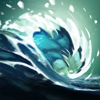
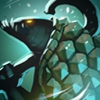
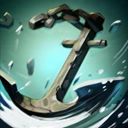
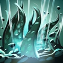
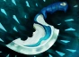
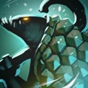
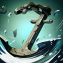
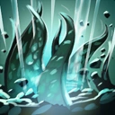
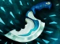

Tidehunter — герой, прекрасно справляющийся с ролью оффлейнера,
способный эффективно инициировать драки и принимать на себя основной
удар врага. Gush
 позволяет Tidehunter
накрыть цель водяным потоком, который наносит урон, замедляет и
снижает защиту. Это отличный вариант не дать противнику от вас уйти, к
тому же усилив урон по нему полагающихся на физический урон союзников.
С Aghanim's Scepter
 Gush станет
выпускать волну, распространяющую эффект на всех задетых по пути
врагов. Способность Kraken Shell
 поглощает
часть урона от атак, а также развеивает большинство отрицательных
эффектов на герое каждый раз, когда урон по нему достигает
определённого порога. Это позволяет Тайдхантеру находиться в самом
центре драке, принимая на себя урон и заклинания врага, не рискуя
умереть в первые секунды сражения. Активируя Anchor Smash
, Tidehunter
бьёт якорем всех врагов вокруг, нанося урон и снижая их силу атаки. С
этой способностью герой становится ещё более выносливым, к тому же
получая возможность быстро расправляться с лагерями лесных крипов.
Ультимативная способность Ravage
 вызывает из земли
мощные щупальца, которые подбрасывают врагов вокруг в большом радиусе,
нанося урон и оглушая. Ravage — основная способность героя,
позволяющая ему выводить из строя всю вражескую команду. Вовремя
использованный ультимейт способен перевернуть даже практически
проигранное сражение. Чтобы облегчить эту задачу, можно купить Blink
Dagger ,
который позволит вам занять позицию и моментально оказаться в центре
драки в нужный момент.
Gush станет
выпускать волну, распространяющую эффект на всех задетых по пути
врагов. Способность Kraken Shell
 поглощает
часть урона от атак, а также развеивает большинство отрицательных
эффектов на герое каждый раз, когда урон по нему достигает
определённого порога. Это позволяет Тайдхантеру находиться в самом
центре драке, принимая на себя урон и заклинания врага, не рискуя
умереть в первые секунды сражения. Активируя Anchor Smash
, Tidehunter
бьёт якорем всех врагов вокруг, нанося урон и снижая их силу атаки. С
этой способностью герой становится ещё более выносливым, к тому же
получая возможность быстро расправляться с лагерями лесных крипов.
Ультимативная способность Ravage
 вызывает из земли
мощные щупальца, которые подбрасывают врагов вокруг в большом радиусе,
нанося урон и оглушая. Ravage — основная способность героя,
позволяющая ему выводить из строя всю вражескую команду. Вовремя
использованный ультимейт способен перевернуть даже практически
проигранное сражение. Чтобы облегчить эту задачу, можно купить Blink
Dagger ,
который позволит вам занять позицию и моментально оказаться в центре
драки в нужный момент.
Лор Арбуза
Tidehunter, также известный как Левиафан — могучий защитник Затонувших островов; понять его намерения не в силах ни одна живая душа. К примеру, мы все знаем о том, как важен контроль над крупными морскими маршрутами, и о том, как резко может измениться экономическая ситуация империи, контролирующей тот или иной пролив. Но что вам известно о подводных маршрутах? А вы когда-нибудь слышали о соглашении между кланами Мер и Мен? Подводные маршруты обладают не меньшей важностью, чем наводные. За господство над ними ведутся такие же кровавые бои, а их владельцы так же самодовольны, как и монархи наземных империй. Tidehunter устал от этих распрей, покинул родные воды и отправился на мелководье, ведомый глубинным богом Мэльроном. Похоже, он скитается без цели, если не считать поиски капитана Kunkka, с которым у Левиафана остались несведенные счеты.
Способности
Gush
Призывает водяной поток, наносящий противникам урон и уменьшающий их скорость передвижения и броню.
- Способность: направленная на юнита/направленная на точку (с Aghanim's Scepter)
- Действует на: врагов
- Тип урона: магический
- Дальность применения: 700
- Урон: 110/160/210/260 (Талант: 210/260/310/360)
- Снижение брони: 3/4/5/6
- Снижение скорости передвижения: 40% (Талант: 50%)
- Длительность: 4,5
Kraken Shell
Утолщает шкуру героя, блокируя часть физического урона. Когда полученный урон достигает определенного предела, способность сбрасывает все отрицательные эффекты. Эффект не сочетается с другими предметами, блокирующими физический урон.
- Способность: пассивная
- Действует на: себя
- Шанс срабатывания: 100%
- Блок урона: 16/34/52/70 (Талант: 20/38/56/74)
- Граница урона: 600/550/500/450
- Время сбрасывания порога урона: 7
Anchor Smash
Взмах могучего якоря наносит противникам вокруг урон, равный увеличенной атаке героя, и уменьшает урон от их атак.
- Способность: ненаправленная/пассивная (с талантом)
- Тип урона: мгновенная атака
- Урон: 45/90/135/180 (Талант: 95/140/185/230)
- Снижение урона: 30%/40%/50%/60% (Талант: 60%/70%/80%/90%)
- Длительность: 6
- Радиус: 375
- Срабатывание при атаке: 0% (Талант: 50%)
Dead in the Water
Герой приковывает тяжелый якорь ко вражескому герою, накладывая на него привязку. Если жертва попытается отойти от якоря на расстояние больше 350, её скорость уменьшится на 100, а якорь потянется за ней. Якорь можно уничтожить 5 атаками героев.
- Способность: направленная на юнита
- Действует на: врагов
- Тип урона: магический
- Дальность применения: 350
- Урон: 200
- Длина цепи: 350
- Изменение максимальной скорости передвижения: 100
- Количество атак героев для уничтожения якоря: 4
- Количество атак крипов для уничтожения якоря: 16
- Продолжительность: 10
- Для открытия способности требуется Aghanim's Shard.
Ravage
Сотрясает землю и выпускает во все стороны щупальца, нанося всем врагам вокруг урон и оглушая их.
- Способность: ненаправленная
- Действует на: врагов
- Тип урона: магический
- Радиус: 1250
- Ширина волны: 250
- Скорость движения: 725
- Урон: 250/350/450
- Длительность оглушения: 2/2,2/2,4 (Талант: 2,8/3/3,2)